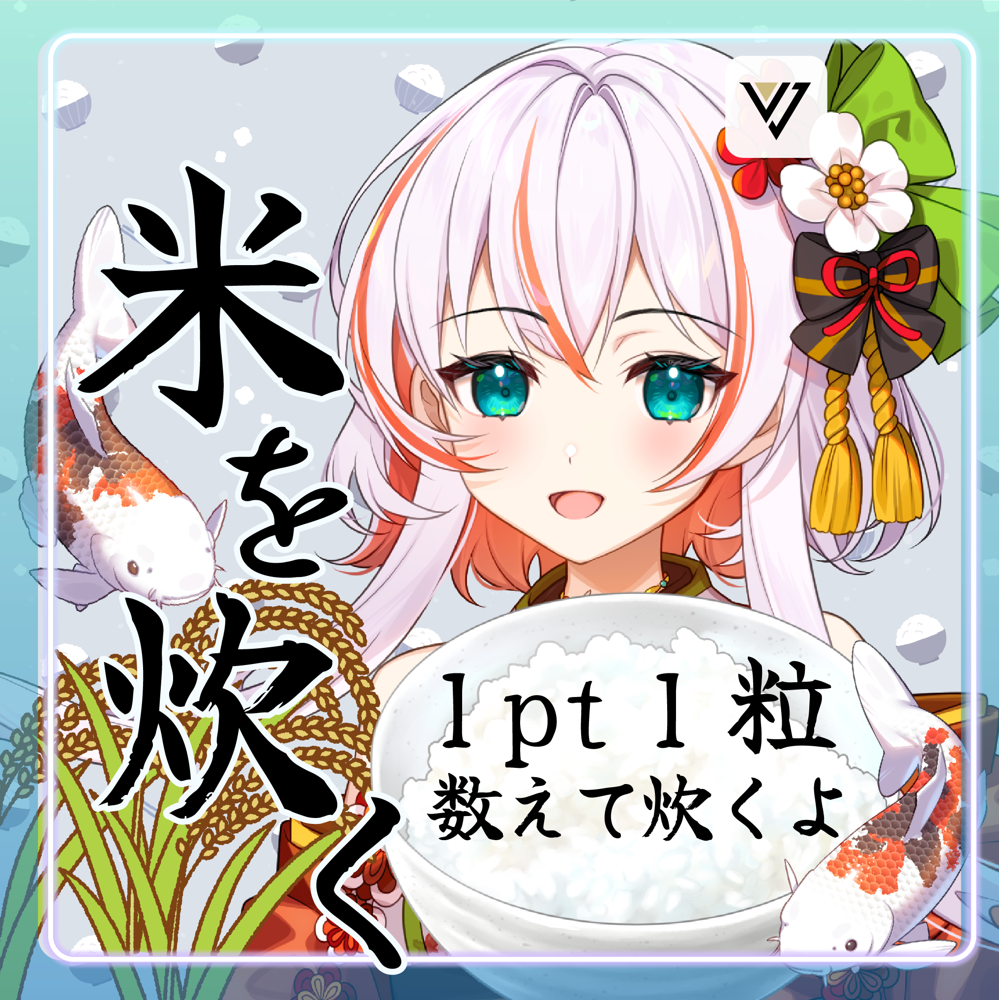
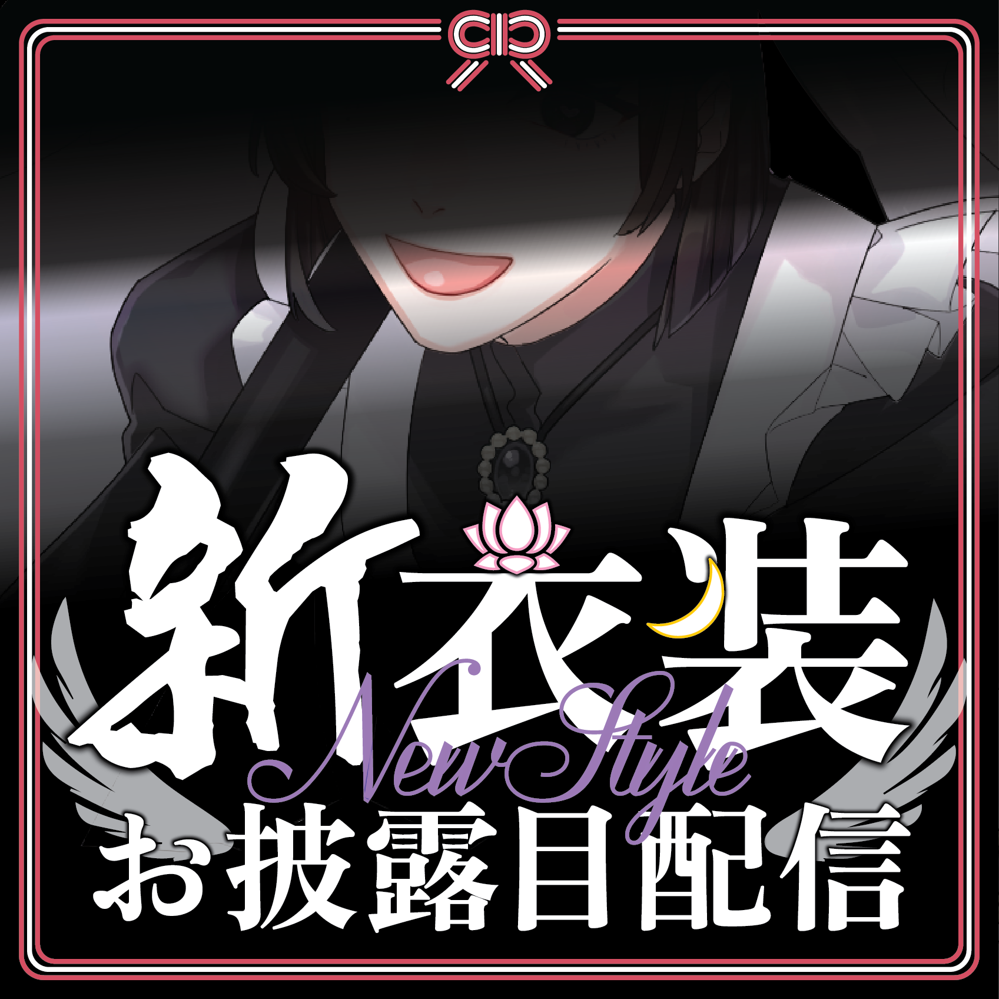
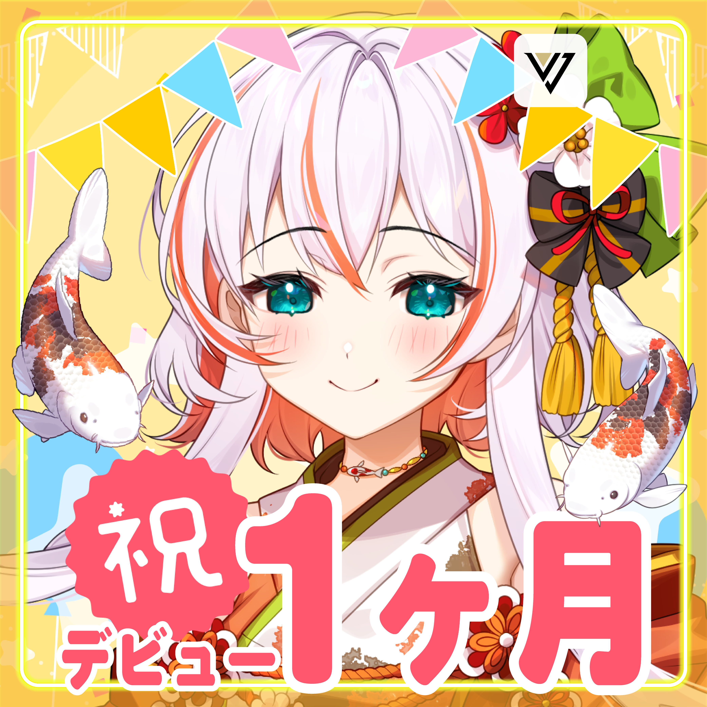
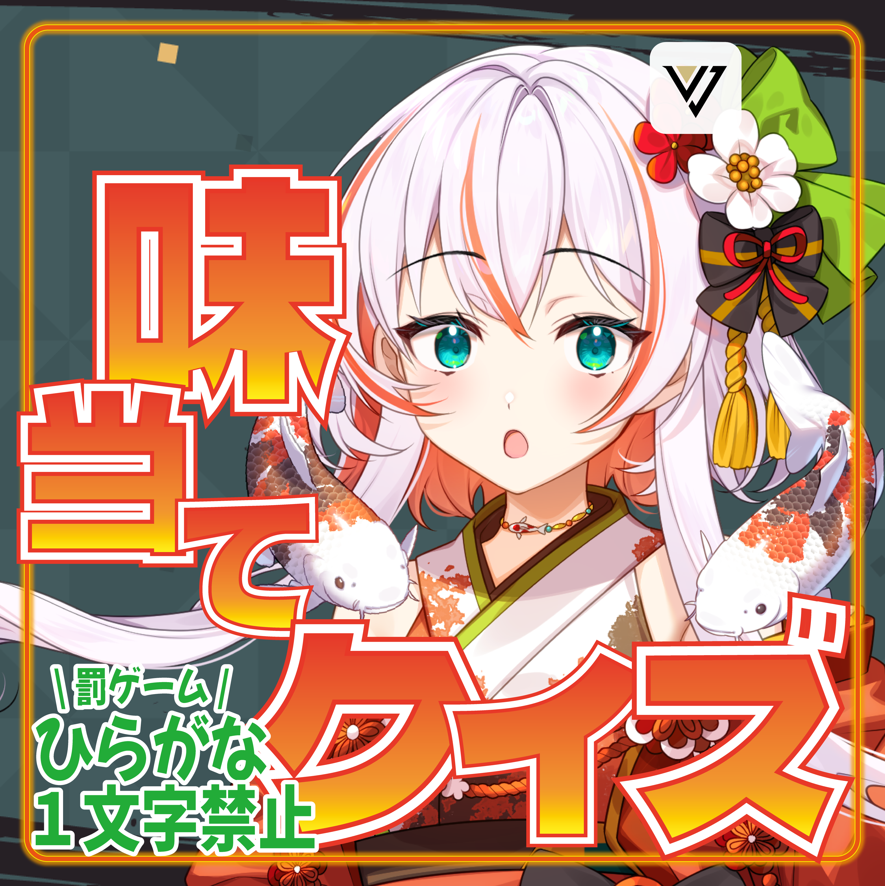
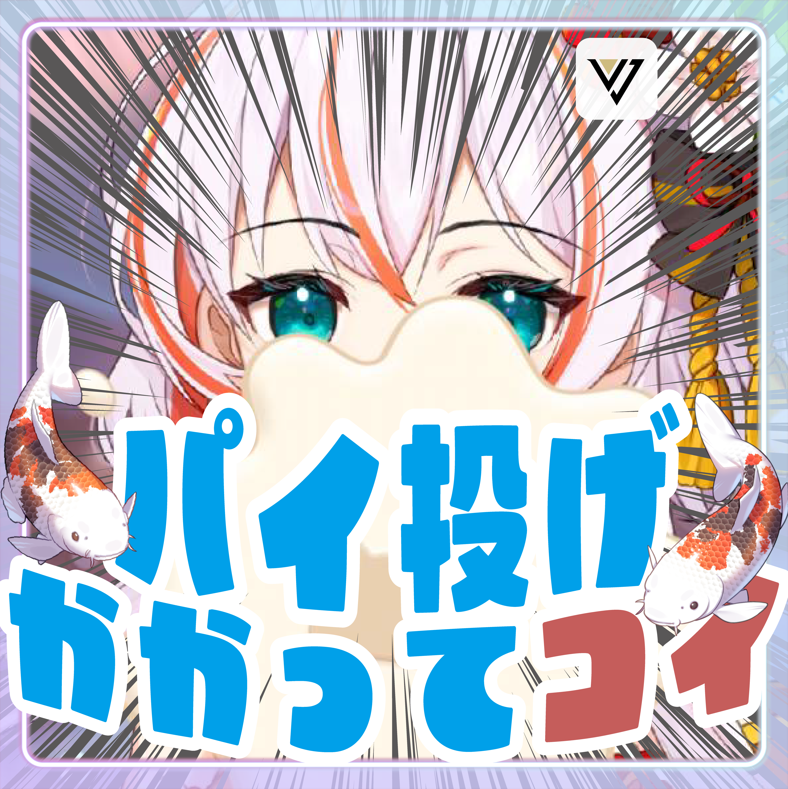
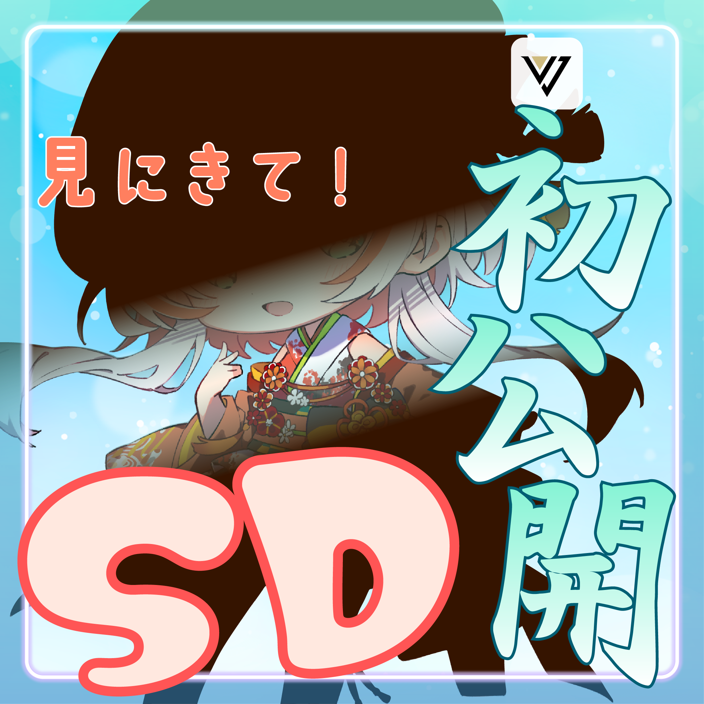
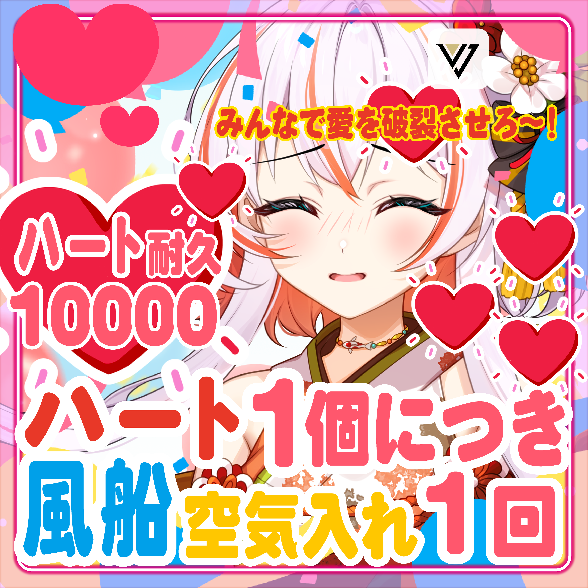
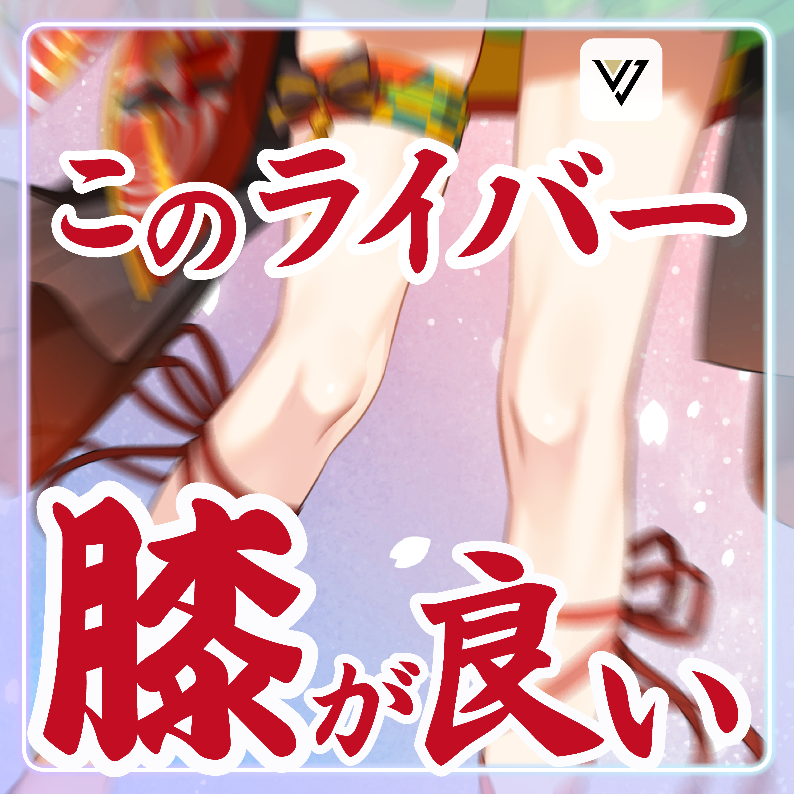

主に配信アプリIRIAM用の正方形のサムネイル。上方にはUIが被るため、あえてスペースをあけています。作業時間はそれぞれ30分〜1時間。
数が多いため一部を紹介します。
担当
個人/サムネイル制作

「ギフト１ptごとにお米を一粒鍋に入れて(最終的にまとめて)炊く」という企画。
米粒ひとつひとつを意識して、稲や炊きたてのごはんの画像を用意。和の雰囲気やお米の湯気のイメージで、毛筆のフォントをゆるやかに配置しました。

「新衣装公開」という、新しい姿で配信することを伝えるサムネ。
ファンマークの蓮と三日月、モチーフの鳥の翼、イメージカラーの白黒を取り入れ、
そのライバーだからこそできる文字組にこだわりました。

配信を始めて１ヶ月記念日のためのサムネ。
祝福される様子を表すため、明るい色でポップに仕上げました。

どの調味料を食べているか当ててもらうゲームの企画。
罰ゲームありの白熱戦なので、驚いた表情と熱い色の文字を組み合わせました。
特に文字はサイズの強弱や配置で動きのある表現を目指しました。

アプリ内ギフト「パイ」を顔面に当てられないように避ける企画。
鯉のライバーなので、「コイ」を強調しました。

初めてSDの姿で配信することを伝えるサムネ。
シルエットは公開しつつ、実際のイラストは配信内で見てほしいので口元だけチラ見せしています。

ギフト「ハート」をもらうたびに風船の空気入れを１プッシュ（風船が割れるまで）する企画。
背景が賑やかで文字数が多いので、文字の周りの縁を大きめにとったりサイズや色を調整して読みやすくなるように工夫しました。

顔を売りにしている配信者が多い中、あえて膝を強調するスタイル。
膝が細いので画面では主に文字で表現しました。